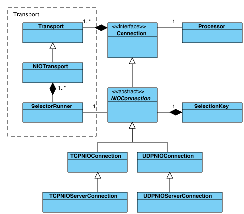

Transports and Connections
Transport and Connection represent the core network API in Grizzly 2.3.
Transport defines a network transport such as TCP or UDP, including associated resources (thread-pool, memory manager etc) and default configuration for nested Connections.
Connection in Grizzly 2.3 represents a single network connection (very similar to socket), depending on type of Transport it could be TCP or UDP connection or any custom connection type.
The relationship between Transport and Connection is 1-to-many.
-
Transports

Per class diagram above, Grizzly 2.3 has two Transport implementations: NIO TCP and NIO UDP, which is based on Java NIO, though in the future, support for NIO.2 based transports and SCTP will be added once JDK 7 is available.
Let’s briefly go throw the auxiliary components mentioned on the diagram
- MemoryManager implements the memory allocation/release logic (see the Memory management section);
- ExecutorService represents the Transport associated thread-pool
- Processor transport default Processor logic, which is responsible for processing NIO events. Processors are assigned per Connection, so this one will be taken as the default one, but each Connection may have own customized Processor
- Strategy implements IOStrategy (see I/O Strategies section)
- NIOChannelDistributor is responsible for distributing newly created Connections among Transport NIO Selector threads
- SelectorRunner implements single Selector thread logic, which selects ready NIO events and passes them to the Processor, which will process it according to the Strategy logic
- SelectionKeyHandler is a wrapper over SelectionKey operations, also:
- maps Java NIO operations (OP_READ, OP_WRITE etc) mapping to Grizzly IOEvent - maps Java NIO SelectionKey to Grizzly Connection- SelectorHandler implements thread-safe logic for registering/de-registering SelectableChannels on Selectors, changing SelectionKey interests, executing custom tasks in Selector threads (to avoid unexpected locks)
-
Connections

On the diagram above we see how Connections are related to Transports and basic Connection abstractions. In Grizzly 2.3 we have TCP and UDP Connection realization, besides that we have special server-Connections for both TCP and UDP.
- TCPNIOServerConnection works in a similar way as TCP ServerSocket. It is bound to a specific TCP host:port and listens for the incoming client side TCP connections. When a new TCP connection is ready to be accepted, TCPNIOServerConnection accepts it and, taking into account Transport settings, it configures new connection accordingly.
- UDPNIOServerConnection represents a UDP connection, which is not bound to any specific peer address, so it’s able to receive all the UDP packets targeted to its UDP host:port. In other words the only difference between UDPNIOConnection and UDPNIOServerConnection is that the later is not bound to any peer address.
Let’s briefly describe the rest of the components on the diagram above:
- Processor. The logic, which is responsible for processing Connection NIO events (ACCEPT, CONNECT, READ, WRITE, CLOSE)
- SelectionKey. The Connection underlying java.nio.channels.SelectionKey, which defines the NIO SelectableChannel <-> Selector registration.
-
Establishing client connections
The ConnectorHandler API is responsible for establishing and initializing client connections.

As we see from the diagram above, TCPNIOTransport and UDPNIOTransport implement the SocketConnectorHandler interface, so it’s possible to create a new client Connection using the Transport instance directly like:
Future<Connection> clientConnectionFuture = tcpNioTransport.connect("grizzly.java.net", 80); Connection clientConnection = clientConnectionFuture.get();In this case, newly created client Connections will derive Transport’s Processor. It’s also possible to create customized ConnectorHandler (similar for UDP and TCP transports) like:
SocketConnectorHandler customUdpConnectorHandler = UDPNIOConnectorHandler.builder(udpNioTransport) .processor(customFilterChain) .build(); Future<Connection> clientConnectionFuture = customUdpConnectorHandler.connect("timeserver.com", 3333); Connection clientConnection = clientConnectionFuture.get();We can describe the asynchronous connect operation as two sequence diagrams.
The first one shows the steps passed in the current thread, where we call ConnectorHandler.connect(…) operation and get Future<Connection> as the result:

So the above code just adds the connection object on the SelectorRunner’s queue, which is being processed from selector-thread. Within the selector-thread the connection will be actually registered on the SelectorRunner’s associated Selector and, once it happens, the SelectorRunner notifies ConnectorHandler about the registration completion and
- for UDP transport - UDPNIOConnection gets initialized. The Processor gets notified about CONNECT operation completion and finally the Future<Connection> result becomes available in the custom-thread;
- for TCP transport - we still wait until underlying OS network framework notifies the framework that the connection was actually connected to the destination address (UDP doesn’t have this) and only then Processor gets notified about CONNECT operation completion and finally the Future<Connection> result becomes available in the custom-thread;
In general the logic looks like:

When talking about TCP transport, when we’re on the server side and TCPNIOServerConnection accepts new client connection. In this case the processing logic looks pretty much like the diagram above, but instead of “CONNECT” we notify Processor about “ACCEPT” event having occurred on the TCPNIOConnection.